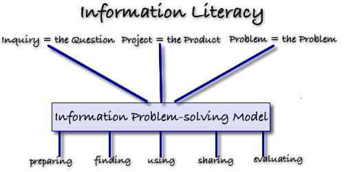

Inquiry-based Learning... Project-based Learning... Problem-based Learning

In Saskatchewan the concept of information literacy has been embedded in the Resource-based Learning approach and has become entrenched in the curriculum.
Resource-based learning is a constructivist-learning environment where students become active participants in their own learning; collaborate with others to meet their learning needs, and through the use of a wide variety of resources piece together information to construct their own meaningful understanding about a subject.
Saskatchewan learning in its policy documents and in each of its curricula states that resource-based learning:
Resource-based learning while offering a constructivist approach to education has been difficult to implement and over the past few years several manifestations have appeared which provide a practical framework for student research. These include inquiry-based learning, project-based learning and problem-based learning . Each of these approaches offers teachers a framework within which to structure student learning and once the framework is chosen an information problem-solving model can be selected.
The key emphasis in inquiry-based learning is on student questioning. Faced with an authentic problem students begin with asking questions about the topic being studied. Students are guided through inquiry by asking:
These questions, gleaned from the students’ natural curiosity, guide the research process leading students to find information from which they create their own knowledge and understanding about the topic. When students find answers to their own questions, their motivation and ownership is increased. Instructors act more as coaches, guides, and facilitators who help learners arrive at their "true" questions—the things they really care about.
Middle years teachers in the Living Sky School Division are involved in a professional development working committee in which they are using division supplied laptops to create inquiry-based units. Teachers have been involved in learning about inquiry-based learning, new web-based technology tools and backwards design . Their finshed product will be a unit based on each of the four middle years ELA curricula which will be available to all teachers.
Resources:
An introduction to Inquiry-based Learning
Concept to Classroom: Inquiry-based Learning
Project-based learning (PBL) is a student-centered teaching and learning strategy which enables students to acquire new knowledge and skills in the course of designing, planning and creating a product or performance.
Students are given a clearly stated problem that requires a specific set of conclusions or a solution that directly responds to the problem. Real world connections are made through the application and integration of content from different subject areas during the production process.
The Buck Institute for Education defines project-based learning as “ a systemic teaching method that engages students in learning knowledge and skills through an extended inquiry process structured around complex authentic questions and a carefully designed products and tasks”. Esch, (1998) outlines the production model steps which students following in project based learning:
The production process and the end product in project-based learning engage students in doing rather than passively receiving knowledge thus allowing them to create their own knowledge.
The driving force behind problem-based learning is the ill-structured, messy problem matching the complexities of real life. Problem-based learning stems from the belief that the purpose of education is to teach students to solve problems because the “non-school world (everyday life, business, hobbies, organizations) demands competent problem solvers”.
Schools usually ask students to solve well-structured problems such as story problems, which require a finite number of concepts, rules, and principles to be applied to a constrained problem situation. In these situations students only grasp the surface elements of the problem and do not form a conceptual understanding of the problem. Thus, they are unable to transfer their problem solving skills to other problems which are ill-structured, messy and with solutions that are not predictable and convergent The process in problem-based learning mirrors the learning process required of learners when they encounter problems in their lives and careers.
The problems students are posed often lack clarity, do not have a set formula to follow, change with new information and have many different solutions that can be reached. To solve the problem students need to accept uncertainty, make judgments and express personal opinions and beliefs.
Well-structured and ill-structured problems:
| Well Structured Problems |
Ill-structured Problems |
| All elements are presented |
Minimum elements |
| Students utilize a minimum number of rules and principles | Multiple criteria for evaluating solutions |
| Rules and principles organized in a predictive way | Unstated constraints |
| Process leads to correct, convergent answers |
Vaguely defined and unclear goals |
| Preferred, prescribed solution process |
Many alternative soluti |
(Jonassen, Learning to Solve Problems with Technology, 2003)
Technology is a key component of problem-based learning, as students must have access to a wide variety of resources and the skills to be able to find, use and share the information necessary for solving an ill-structured problem.